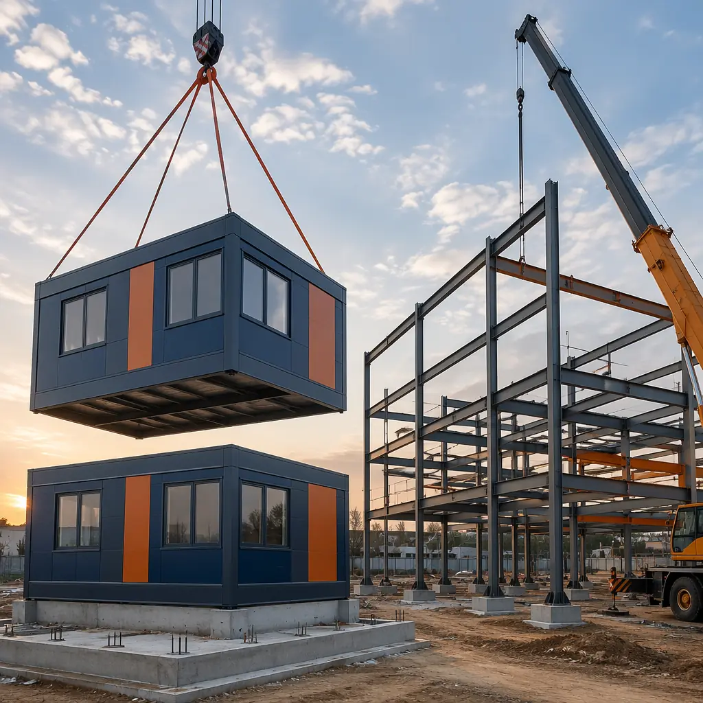
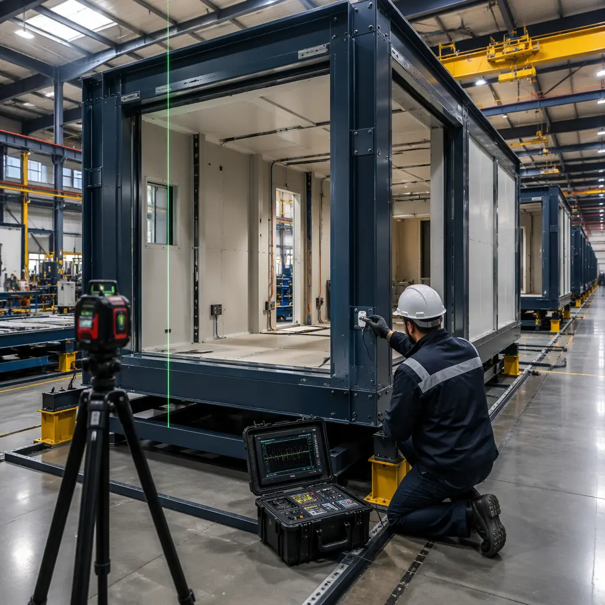
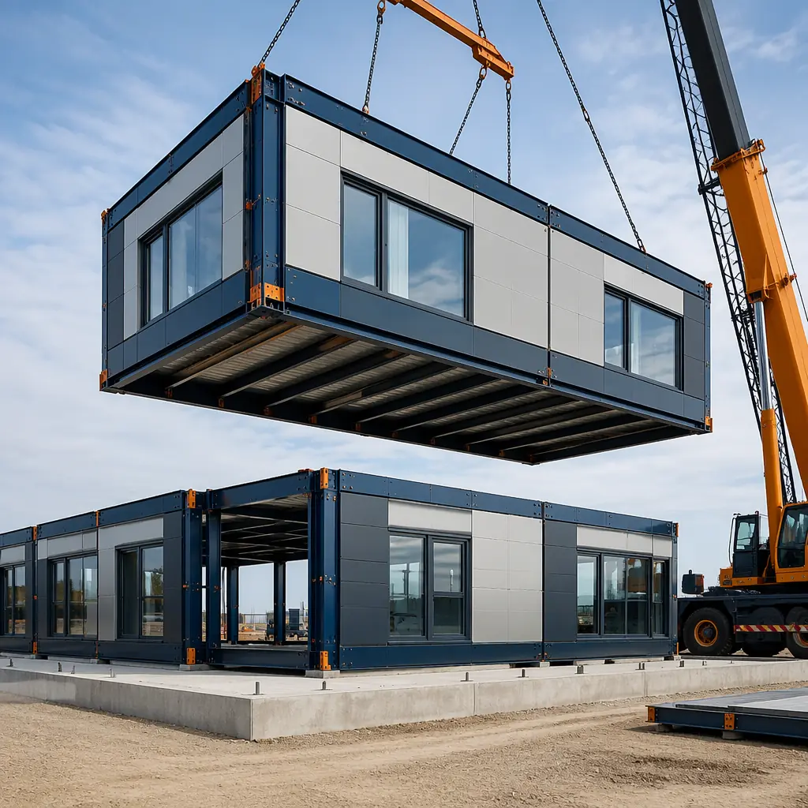
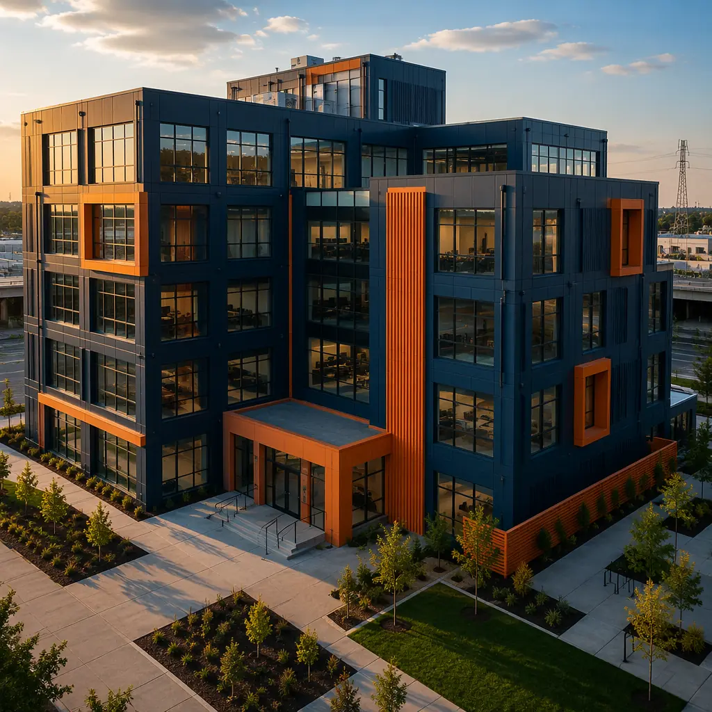

Both modular construction and conventional steel frame construction start from the same material. Both use structural steel. Both comply with the same building codes — IBC, AISC 360, local amendments. But from that shared starting point, the two methods diverge so dramatically that a developer choosing between them is effectively choosing between two different industries: one that builds inside a factory, and one that builds in a field. This comparison examines every dimension that matters to project outcomes: timeline, cost structure, quality control, design flexibility, fire safety, seismic performance, and long-term building value.

Where the Steel Goes — Factory vs Field Assembly
The critical distinction is not what material is used, but where it is assembled. In conventional steel frame construction, raw steel members — wide-flange beams, HSS columns, channel sections — arrive at the site as individual pieces. A steel erection crew connects them in the open air, working from mobile cranes and man lifts, exposed to wind, rain, and temperature extremes. The work proceeds sequentially: columns first, then beams, then decking, then fireproofing, then the building envelope can begin. Each trade waits for the one before it to finish before it can start. A 50,000 sq ft commercial building typically spends 14–20 weeks in this structural steel phase alone.
In modular steel frame construction, the same steel shapes are cut, welded, and assembled inside a factory — but they become part of a completed building module, not a bare frame. The steel frame of a module is fabricated on a production jig that guarantees dimensional accuracy to within ±2 mm across a 14-meter module length. Wall panels, windows, plumbing stacks, electrical conduits, and interior finishes are installed while the module is still on the factory floor, under roof, with QA inspectors checking every weld and connection. By the time a module leaves the factory, it contains 85–95% of its total labor content. The site crew connects modules together rather than building from raw steel.
This factory-to-site transfer is what produces the speed advantage that developers consistently rank as modular's number-one benefit. For the developer who has already examined modular vs traditional construction timelines, the steel frame comparison is particularly instructive: both methods use steel, but modular uses it 40–60% faster.
Cost Structure Comparison — Where the Money Goes
The cost difference between modular and conventional steel frame is not a simple per-square-foot comparison. The two methods have fundamentally different cost structures, and the total project cost depends heavily on project type, location, and scale.
| Cost Category | Modular | Conventional Steel Frame |
|---|---|---|
| Structural steel material | $18–24/sq ft (factory bulk purchasing, optimized cutting) | $16–22/sq ft (project-by-project pricing) |
| Steel erection labor | $4–7/sq ft (factory assembly + 2–3 day site set) | $12–18/sq ft (14–20 weeks of site labor) |
| Fireproofing | $2–4/sq ft (factory-applied, QA-inspected) | $5–8/sq ft (site-sprayed SFRM, weather-delay risk) |
| General conditions / site overhead | $3–5/sq ft (compressed schedule) | $8–12/sq ft (extended site duration) |
| Total structural + erection | $27–40/sq ft | $41–60/sq ft |
The modular advantage in site labor and general conditions more than offsets its slightly higher material cost. For a 50,000 sq ft project, the structural cost difference alone can reach $500,000–$1,000,000. When factoring in the compressed schedule — which means earlier occupancy, earlier rent collection, and lower construction loan interest — the total project cost advantage typically widens further. Developers evaluating modular construction cost per square foot will find that factory-built steel consistently undercuts site-built steel on total project economics.
Quality Control — Factory Precision vs Field Tolerance
This is where the two methods diverge most sharply, and where the consequences of choosing site-built steel become visible over the building's lifetime.
In the factory, every steel connection is welded on a calibrated production jig. Weld inspectors certified to AWS D1.1 examine every complete joint penetration weld using ultrasonic testing. Dimensional checks are performed at three stations: after frame welding, after wall panel installation, and before module shipment. The factory operates under an ISO 9001-certified quality management system with documented procedures, traceable material certifications, and audited inspection records. The environmental conditions are controlled: 18–25°C, low humidity, no rain on exposed steel.
On the conventional steel frame site, erection crews work from the drawings with field-measured dimensions. Column base plates are set in wet concrete with anchor bolt templates that typically achieve ±6 mm tolerance — three times looser than factory jigs. Field welding is weather-dependent: wind above 15 mph can blow away shielding gas on MIG welds, rain requires tenting, and cold weather requires preheating that is frequently skipped under schedule pressure. Field bolt tension verification is typically done by the "turn-of-nut" method rather than calibrated torque wrenches. Weld inspection is sampled — typically 10% of connections — rather than comprehensive. This is not because site crews are less skilled; it is because field conditions make factory-level precision physically impossible.
The consequences accumulate over decades. A factory-welded module frame with consistent 2 mm tolerances produces square corners that keep doors and windows operating smoothly for 30+ years. A field-welded frame with 6 mm variability produces cumulative racking that shows up as sticking doors, cracking drywall, and leaking window seals within 5–10 years. For developers who have invested in understanding modular construction warranties and structural guarantees, the quality-control argument for factory assembly is difficult to refute.

Fire Safety — Both Methods Meet Code, But Differently
Both modular and conventional steel frame construction achieve required fire resistance ratings, but through different mechanisms that affect cost, construction sequence, and long-term durability.
Conventional steel frame fire protection typically uses spray-applied fire-resistive material (SFRM) — a cementitious or mineral-fiber coating sprayed onto steel members after erection. Achieving a 2-hour rating requires approximately 40–50 mm of SFRM thickness, applied in multiple passes with curing time between each. The application is weather-sensitive: high humidity slows curing, rain washes uncured material off, and cold temperatures require tenting and heating. The SFRM is fragile — it chips when struck by MEP trades working around the steel — and damaged areas must be patched, often without documentation. Over time, vibration from building use and building settlement can cause SFRM delamination in concealed ceiling spaces, where the damage goes undetected until a fire event.
Factory-built modular fire protection uses a fundamentally different approach. Each module's steel frame receives intumescent paint — a thin-film coating that expands to 50 times its dry-film thickness when exposed to fire, forming a char layer that insulates the steel — in a controlled spray booth with documented dry-film thickness verification. Alternatively, modules use factory-installed fire-rated gypsum board assemblies tested as complete systems at accredited laboratories. The fire-rated assembly is inspected and signed off before the module leaves the factory, with photographic documentation. Because the modules are 85–95% complete before site delivery, the fire protection is not exposed to weather, trade damage, or schedule-driven shortcuts. For developers building in jurisdictions with stringent fire code enforcement, modular construction fire safety documentation provides a level of verifiability that site-applied SFRM cannot match.
Seismic Performance — Ductility and Connection Design
Steel is inherently ductile — it can deform significantly before fracture, absorbing seismic energy through plastic deformation rather than brittle failure. Both modular and conventional steel frame construction exploit this property, but their seismic load paths differ in ways that affect performance in high-seismic zones.
A conventional steel moment frame resists lateral loads through rigid beam-to-column connections that transfer moment through the frame. The connections are designed to yield in a controlled sequence — beams yield before columns, connections yield before members — providing the ductility that modern seismic codes demand. However, the site-welded moment connections that make this work are among the most demanding field operations in construction: complete joint penetration welds in overhead positions, requiring prequalified welding procedures, certified welders, and ultrasonic testing. The 1994 Northridge earthquake revealed that even properly executed field moment connections can fail in brittle fracture modes that were not predicted by laboratory testing of idealized specimens.
Modular steel buildings resist seismic loads through a combination of module-to-module connections and dedicated lateral force-resisting systems. Each module is a rigid steel box with fully welded connections at every joint — the factory environment makes complete joint penetration welds routine rather than exceptional. Modules are connected to each other using high-strength bolts at the corners, creating a continuous load path from roof to foundation. In high-seismic applications, dedicated braced frames or shear walls are integrated into specific modules and connected across module joints. The result is a building with multiple redundant load paths — a characteristic that seismic engineers value because redundancy prevents progressive collapse if any single connection is damaged. For projects in seismic zones, modular seismic design provides specific connection details and testing data that demonstrate how factory-welded steel frames perform under cyclic loading.
Which Projects Should Choose Which Method?
| Project Characteristic | Better Fit: Modular | Better Fit: Conventional Steel Frame |
|---|---|---|
| Repetitive units (hotels, apartments, dorms) | ✓ 40–60% faster, 25–35% lower cost | No advantage |
| Large clear-span spaces (warehouse, gym, atrium) | Possible but module-to-span ratio increases cost | ✓ Optimized for long spans with deep beams/trusses |
| Tight urban site with limited laydown | ✓ Just-in-time delivery, minimal site storage | Requires laydown area for steel deliveries and staging |
| One-off architectural landmark | Higher design cost for unique module configurations | ✓ Unlimited architectural freedom |
| Schedule-critical (revenue-dependent) | ✓ Factory + site work overlap cuts 30–50% from schedule | Sequential workflow, weather-dependent |
| Builder in remote location (labor shortage) | ✓ Factory labor pool independent of site location | Depends on local skilled ironworker availability |

When Hybrid Makes Sense
Not every project requires a binary choice. The most sophisticated developers are increasingly using modular for the repetitive program elements — guest rooms, patient rooms, apartment units, office suites — and conventional steel frame for the unique program elements — lobbies, atriums, conference centers, restaurant spaces. This hybrid approach captures modular's speed and quality advantages for 70–85% of the building area while preserving architectural freedom for the spaces that define the building's identity. The key to successful hybrid projects is early collaboration between the modular manufacturer and the steel frame contractor to coordinate module-to-frame connections, fire-rated separation, and MEP continuity across the interface. Projects using this approach have delivered at 20–25% below the cost of all-modular and 15–20% faster than all-conventional, according to developers who have shared data on modular construction ROI from completed projects.
Modular and conventional steel frame are not competing materials — they are competing production systems. The same ASTM A992 steel goes into both. But in modular, it arrives as a completed building. In conventional steel frame, it arrives as raw members. The decision is not about steel quality — it is about whether you want your steel assembled under a roof or in a field.
